Your screen stays awake, deleted messages stay readable, and links, emotes and fonts look the way they should.
The same chat on every screen. Use the arrows to look around.
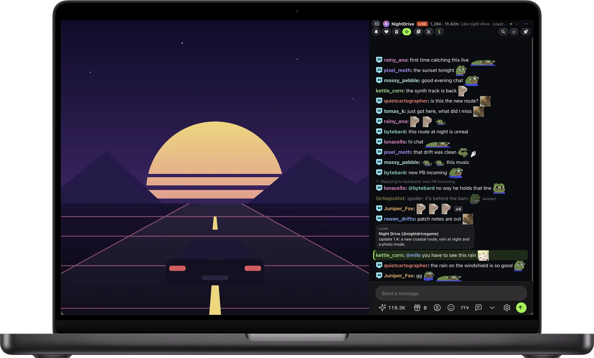
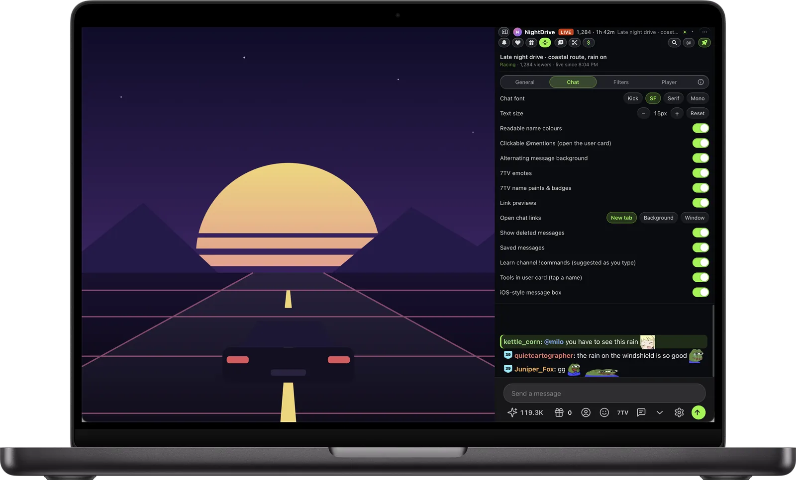
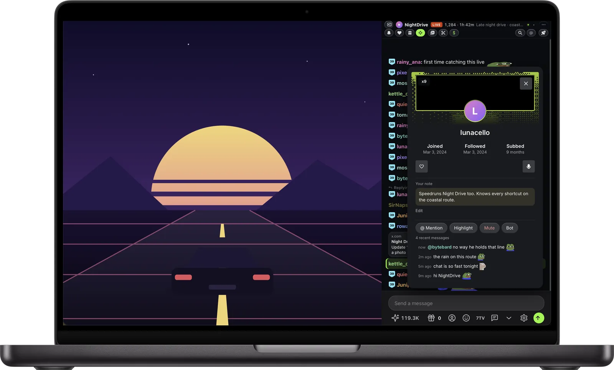
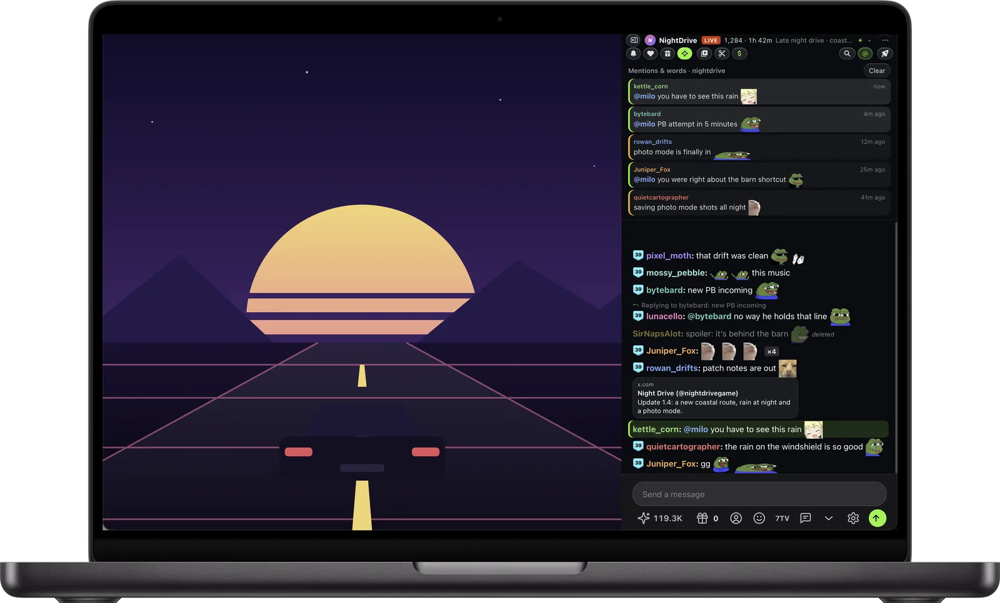
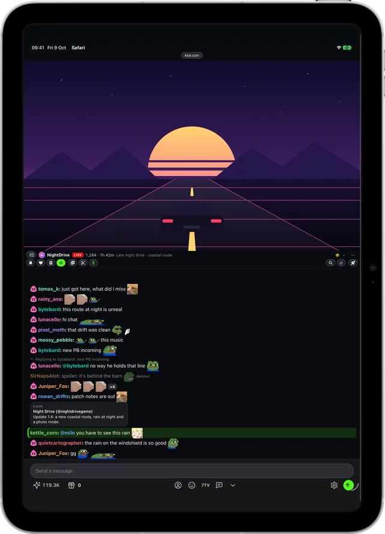
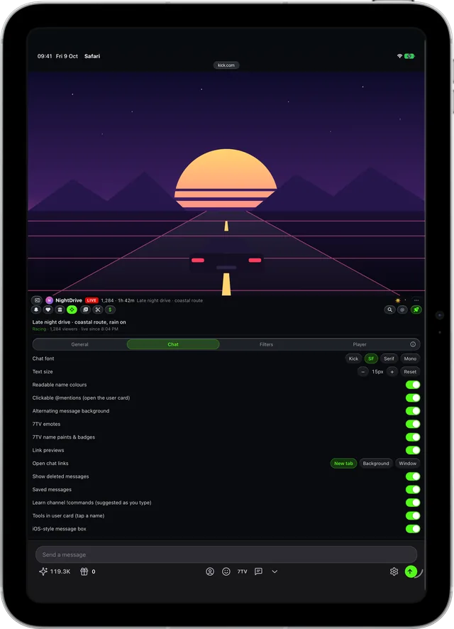
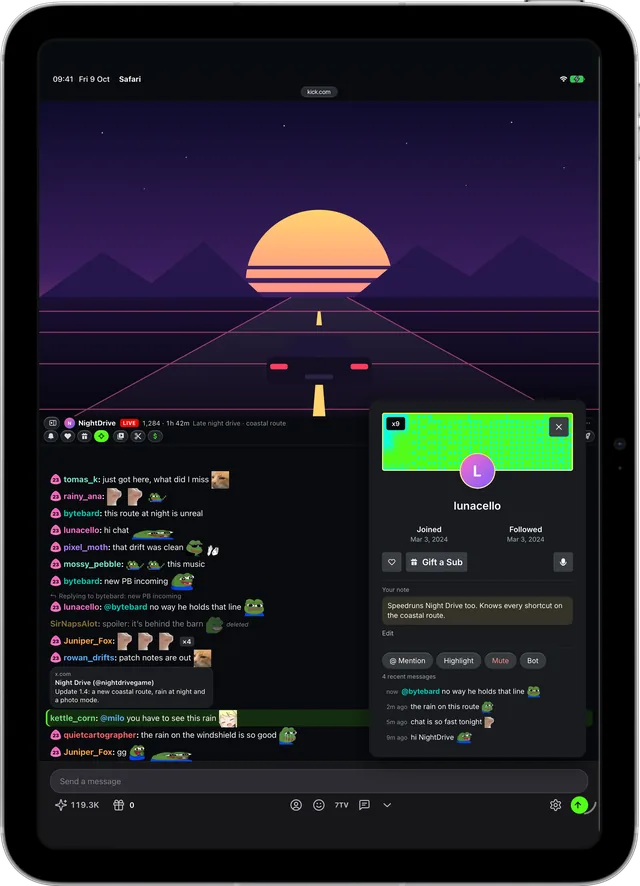
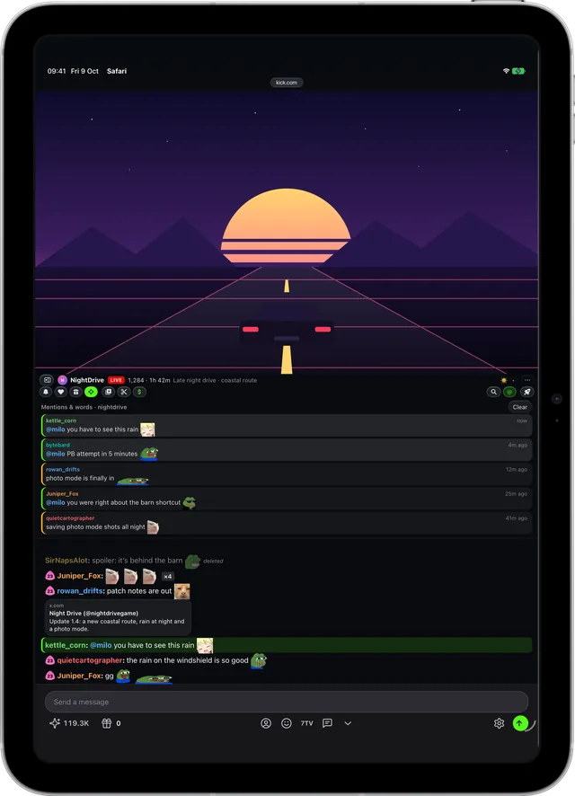
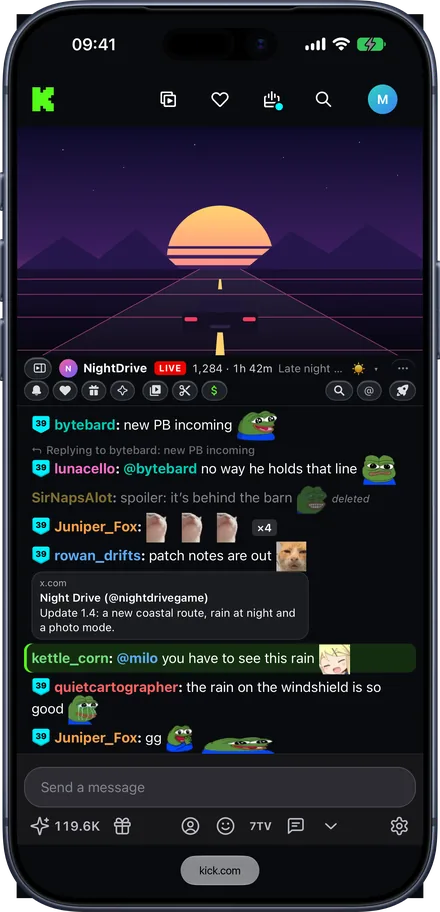
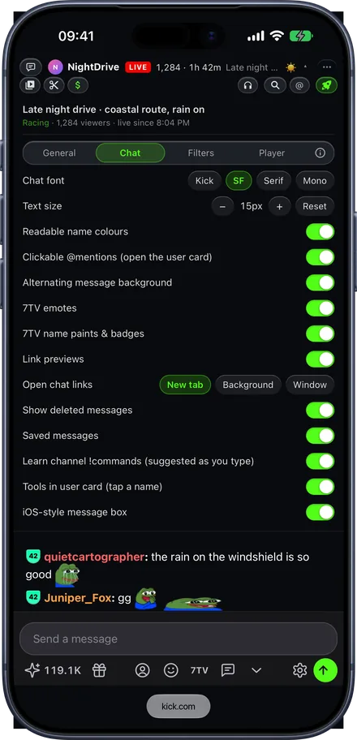
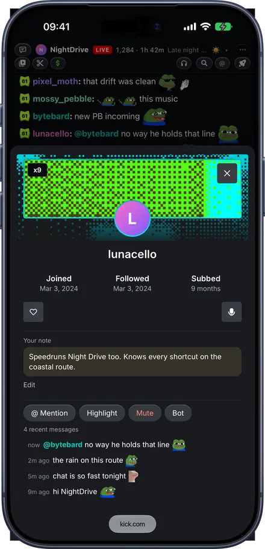
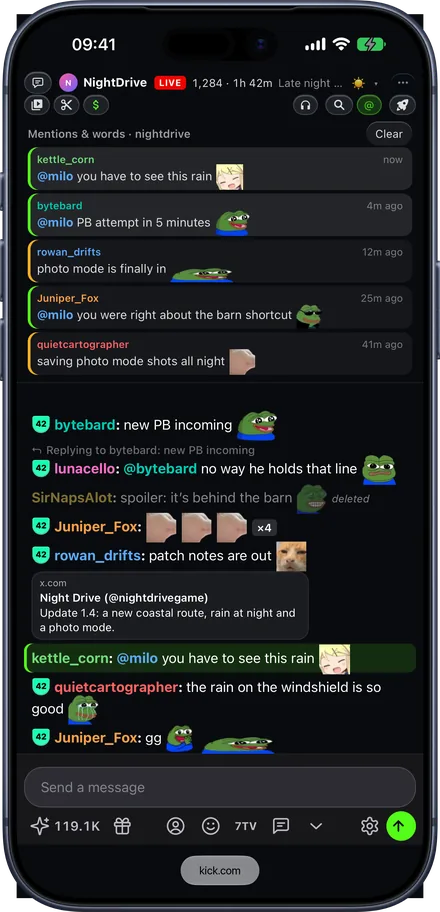
Deleted messages stay readable, links open as previews, 7TV emotes show up, repeated spam folds into one line, and mentions of you stand out.
The rocket at the top of the chat opens Kickon's settings: Apple fonts, text size, and every feature as a switch you can turn off.
Tap a name to see that person's recent messages, highlight or mute them, or keep a private note that syncs through your iCloud.
The @ inbox collects messages that mention you or the words you choose, so you can catch up after a busy minute.
Everything is switched on from one place: the rocket at the top of the chat, with settings in four tabs (General, Chat, Filters and Player). Turn off whatever you don't want.
Your Mac, iPhone or iPad won't dim or lock in the middle of a stream.
Instead of “Deleted by a moderator” you see what was said, greyed out. Messages of timed-out and banned users too.
Images, YouTube, TikTok and X posts open right in the chat, so you don't have to leave the stream. Links you do open can go to a tab in the background or a window of their own, so the stream stays in front.
Channel and global 7TV emotes with name paints and badges, an emote picker and autocomplete. The channel's own !commands are learned when its bot answers them, and suggested as you type ! (or $, ?… if the channel's bot uses another prefix). You can add, edit and delete them yourself in the saved messages panel.
An @ inbox of messages that mention you or your chosen words, and search across the chat, including from:name.
Tap a name, or an @mention of it in a message, to see their recent messages, @ mention them, highlight or mute them, or keep a private note about them. Notes sync through iCloud, and a ✎ marks the people you've written about.
Highlight the streamer and your words. Collapse muted users, chat bots, repeated spam and emote-only messages. Shrink channel point rewards, subs and gifts to one line, or hide them. Lighter shades for hard-to-read name colours, and alternating message backgrounds if you like them.
San Francisco, New York or SF Mono in place of Kick's font, with + and − for text size.
Player opens the stream in the Kickon app on Mac, iPhone and iPad, about as close to live as Kick's own player, with picture in picture, AirPlay and sound on the lock screen. Chat stays in Safari next to it. One switcher, at the top of the chat and in the app, moves between the stream page, the chat on its own and the player. Safari's own player on the page is there too, if you don't mind it running further behind. Streams can open straight in theatre mode, and with the sound on.
A chat-only popout with stream info, and a listen button with a sleep timer for when you only want to hear it. Above the chat, in the popout and on the stream page alike: the channel's videos, clips and a donate button that finds the streamer's tip page among their links (or uses one you set).
Safari extensions come as an app. Install Kickon, then switch it on once.
Kickon asks Safari for access to one site and nothing else. It has no account, no server and no analytics. Your settings and saved messages sync between your Mac, iPhone and iPad through your own iCloud.
It also blocks the ad and tracking services kick.com loads, so the page has less watching you, not more.